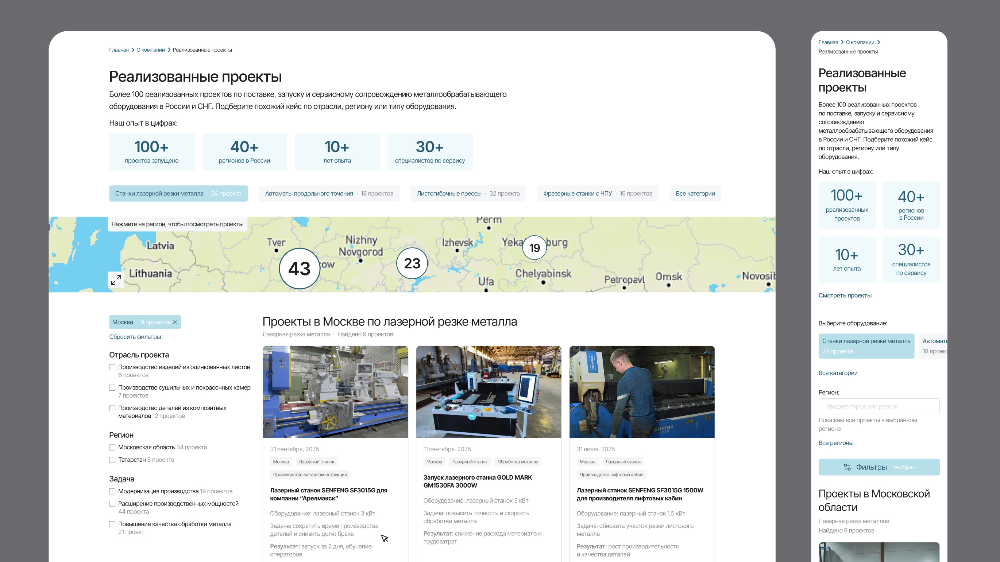
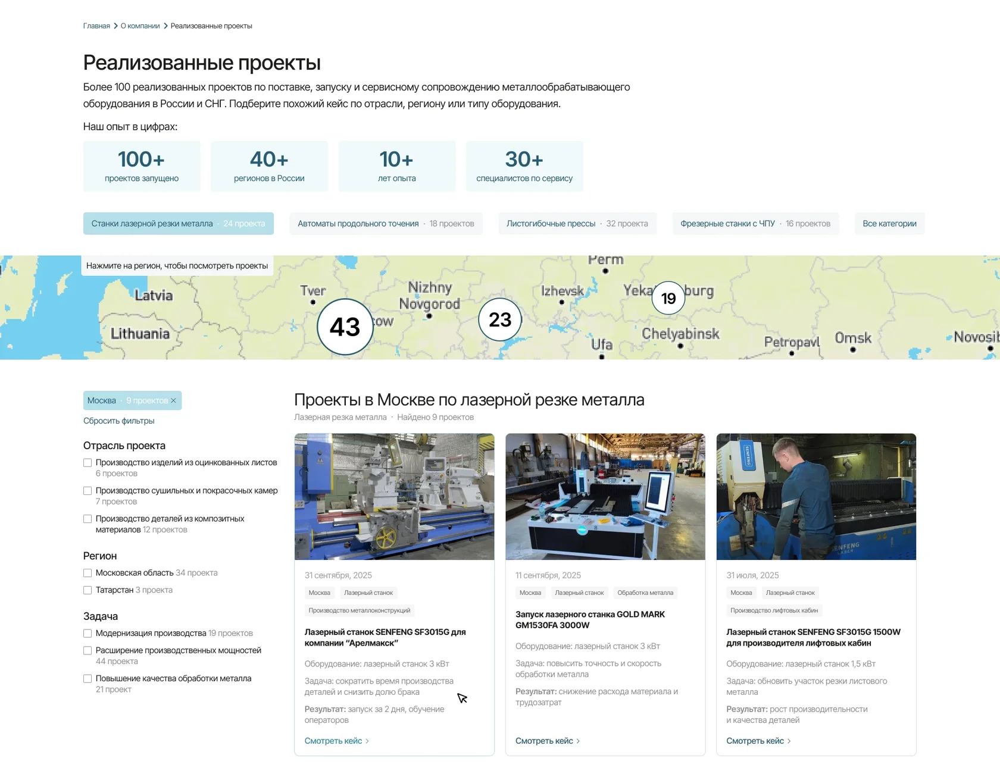
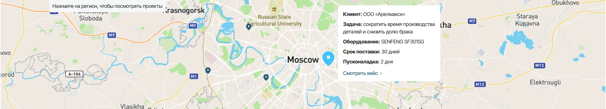
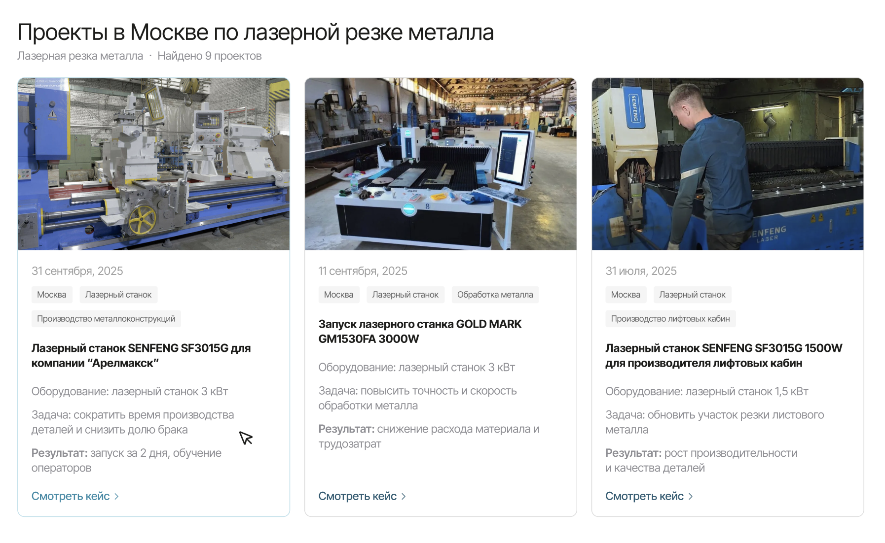
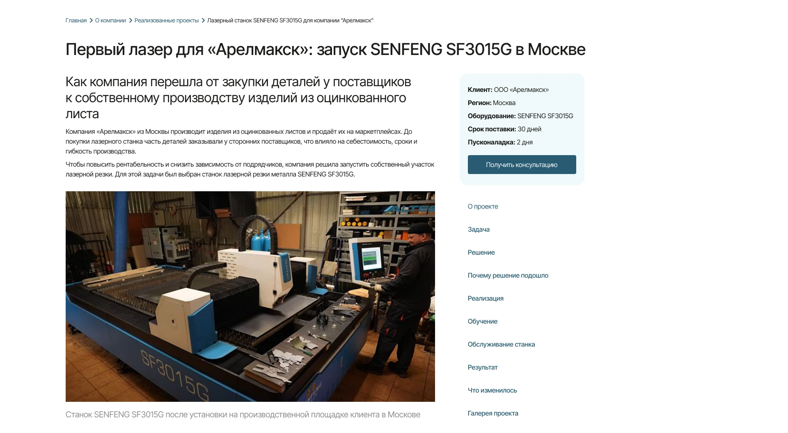
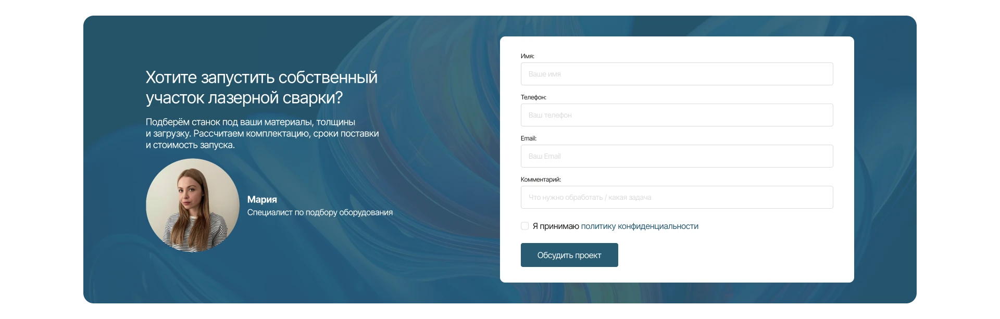
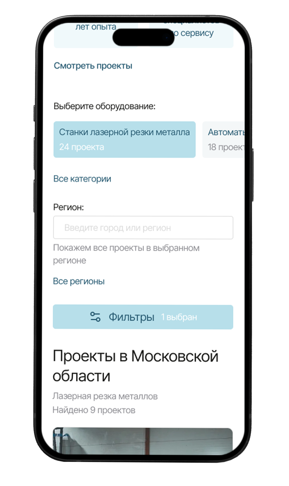
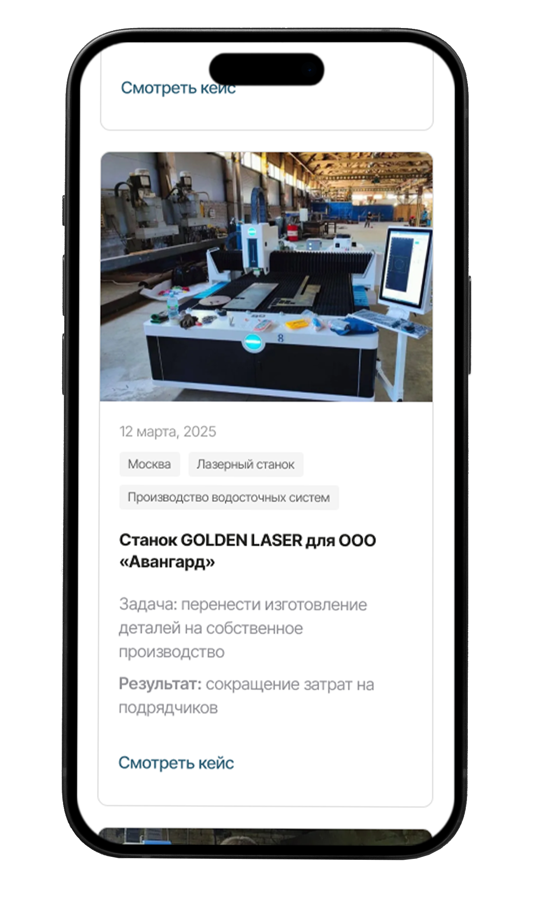
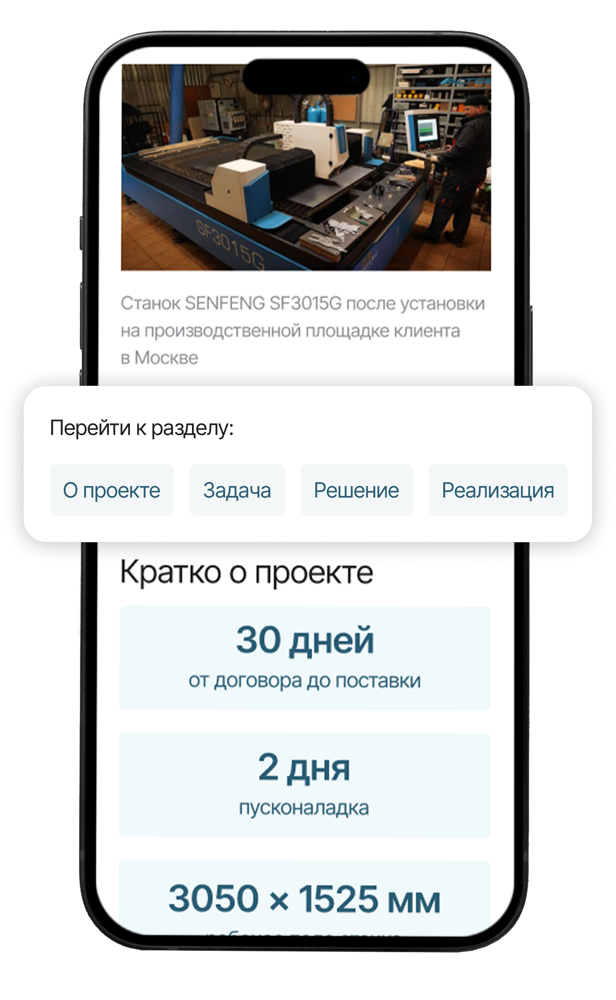

Пользователь ищет похожий проект
Потенциальный клиент планирует купить лазерный станок и хочет убедиться, что компания уже запускала похожее оборудование. Он открывает раздел проектов, выбирает нужную категорию и переходит в детальный кейс.

Я спроектировала с нуля раздел реализованных проектов для B2B-сайта поставщика промышленного оборудования. Раздел должен был работать как витрина экспертизы компании и как дополнительный путь к заявке.
Потенциальный клиент планирует купить лазерный станок и хочет убедиться, что компания уже запускала похожее оборудование. Он открывает раздел проектов, выбирает нужную категорию и переходит в детальный кейс.
Клиенту важно понять, работала ли компания в его регионе. Он использует карту или фильтр по региону и смотрит доступные проекты.
После перехода в кейс пользователь смотрит задачу клиента, выбранное оборудование, этапы запуска и результат. Если задача похожа на его ситуацию, он оставляет заявку.
Менеджер может отправить ссылку на релевантный проект потенциальному клиенту как доказательство опыта компании в похожей задаче.
Перед проектированием я изучила:
Раздел объединяет каталог проектов, карту внедрений и детальную страницу кейса, помогая посетителю найти релевантный опыт компании и перейти к заявке.
Я спроектировала раздел как каталог, а не как обычную ленту статей. Пользователь может не просто читать материалы подряд, а искать релевантные проекты по параметрам: региону, оборудованию, отрасли и задаче.

Карта показывает географию проектов и помогает быстро проверить опыт компании в нужном регионе. На десктопе это работает как элемент фильтрации. Для B2B-аудитории это снижает сомнения по логистике, сервису и масштабу работы поставщика. Для бизнеса карта работает как доказательство масштаба: пользователь видит, что компания не ограничивается одним городом и уже запускала проекты в разных регионах.

В карточке я показала не только фото и название оборудования, но и краткие блоки «Задача» и «Результат». Так пользователь может оценить релевантность проекта ещё до перехода в детальный кейс. Это повышает качество переходов: пользователь открывает не все проекты подряд, а только те, которые похожи на его задачу.

Страница проекта построена по логике: задача клиента → подобранное решение → реализация → обучение → результат → заявка. Такая структура помогает показать не просто факт поставки, а полный путь клиента к результату.
Справа расположен компактный плавающий блок с коротким описанием кейса, кнопкой CTA и навигацией по странице. В любой момент пользователь может оставить заявку, вспомнить, о чём кейс, если он отвлёкся, и быстро перейти к нужному разделу страницы.

Форма заявки размещена после фото, цифр, результата и галереи. Пользователь сначала получает подтверждение экспертизы, а затем видит понятный следующий шаг — обсудить похожий проект. Так CTA появляется в момент, когда пользователь уже получил достаточно доказательств и готов обсудить похожее решение.

На мобильной версии длинные блоки перестраиваются в последовательное чтение: карточки идут в одну колонку, фильтры становятся компактнее.
На мобильном экране не стала переносить desktop-структуру напрямую. Карта занимала много места и скрывала кнопку фильтров, поэтому я убрала её из первого сценария и сделала акцент на компактной фильтрации и карточках проектов.
Для карточек на mobile я оставила только задачу и результат, чтобы сократить высоту карточки и ускорить просмотр списка.



Я спроектировала новый раздел реализованных проектов, который объединяет каталог кейсов внедрений, фильтры, карточки проектов и детальные страницы.
После запуска раздела я бы отслеживала в первую очередь конверсию из просмотра кейса в заявку.